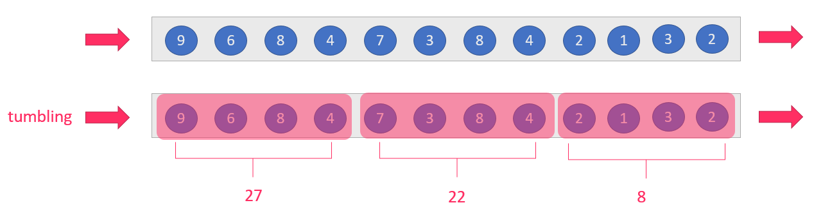
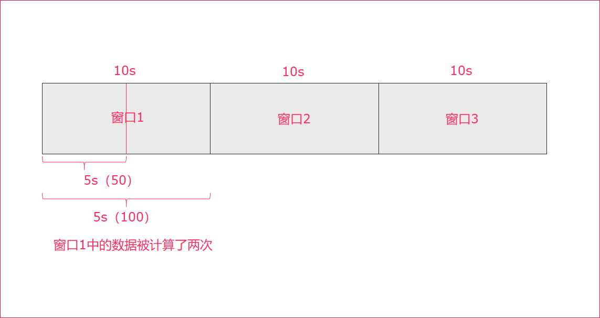

Flink流处理
1. Flink的Window操作
Flink 认为 Batch 是 Streaming 的一个特例，所以 Flink 底层引擎是一个流式引擎，在上面实现了流处理和批处理。而窗口（window）就是从 Streaming 到 Batch 的一个桥梁。Flink 提供了非常完善的窗口机制。
1.1. 什么是window
在流处理应用中，数据是连续不断的，因此我们不可能等到所有数据都到了才开始处理。当然我们可以每来一个消息就处理一次，但是有时我们需要做一些聚合类的处理，例如：在过去的1分钟内有多少用户点击了我们的网页。在这种情况下，我们必须定义一个窗口，用来收集最近一分钟内的数据，并对这个窗口内的数据进行计算。
如果在数据流上，截取固定大小的一部分，这部分是可以进行统计的。 截取方式主要有两种:
- 根据
时间进行截取(time-driven-window)，比如每1分钟统计一次或每10分钟统计一次。- 根据
消息数量进行截取(data-driven-window)，比如每5个数据统计一次或每50个数据统计一次。

1.2. 时间窗口
我们先提出一个问题：统计经过某红绿灯的汽车数量之和？
假设在一个红绿灯处，我们每隔15秒统计一次通过此红绿灯的汽车数量，如下图：
 可以把汽车的经过看成一个流，无穷的流，不断有汽车经过此红绿灯，因此无法统计总共的汽车数量。但是，我们可以换一种思路，每隔15秒，我们都将与上一次的结果进行sum操作（滑动聚合, 但是这个结果似乎还是无法回答我们的问题，根本原因在于流是无界的，我们不能限制流，但可以在有一个
可以把汽车的经过看成一个流，无穷的流，不断有汽车经过此红绿灯，因此无法统计总共的汽车数量。但是，我们可以换一种思路，每隔15秒，我们都将与上一次的结果进行sum操作（滑动聚合, 但是这个结果似乎还是无法回答我们的问题，根本原因在于流是无界的，我们不能限制流，但可以在有一个有界的范围内处理无界的流数据。
因此，我们需要换一个问题的提法：每分钟经过某红绿灯的汽车数量之和？
这个问题，就相当于一个定义了一个Window（窗口），window的界限是1分钟，且每分钟内的数据互不干扰，因此也可以称为翻滚（不重合）窗口，如下图：

第一分钟的数量为8，第二分钟是22，第三分钟是27。。。这样，1个小时内会有60个window。
再考虑一种情况，每30秒统计一次过去1分钟的汽车数量之和：
 此时，window出现了重合。这样，1个小时内会有120个window。
此时，window出现了重合。这样，1个小时内会有120个window。
1.2.1. tumbling-time-window (翻滚窗口-无重叠数据)
按照时间来进行窗口划分,每次窗口的滑动距离等于窗口的长度,这样数据不会重复计算,我们参考上面的案例
代码如下:
object StreamingTumblingTimeWindow {
def main(args: Array[String]): Unit = {
//1.创建运行环境
val env: StreamExecutionEnvironment = StreamExecutionEnvironment.getExecutionEnvironment
//2.定义数据流来源
val textStream = env.socketTextStream("node01", 9999)
//3.转换数据格式，text->CarWc
val data = textStream.map(line => {
val array = line.split(",")
WordCountCart(array(0).toInt, array(1).toInt)
})
//4.执行统计操作，每个sensorId一个tumbling窗口，窗口的大小为5秒
//也就是说，每5秒钟统计一次，在这过去的5秒钟内，各个路口通过红绿灯汽车的数量。
val keyByData: KeyedStream[WordCountCart, Int] = data.keyBy(line => line.sen)
//无重叠数据，所以只需要给一个参数即可，每5秒钟统计一下各个路口通过红绿灯汽车的数量
val result = keyByData.timeWindow(Time.seconds(5)).sum(1)
//5、显示统计结果
result.print()
//6、触发流计算
env.execute()
}
}
/**
* @param sen 哪个红绿灯
* @param cardNum 多少辆车
*/
case class WordCountCart(sen: Int, cardNum: Int)
4.2.2. sliding-time-window (滑动窗口-有重叠数据)
按照时间来进行窗口划分,每次窗口的滑动距离小于窗口的长度,这样数据就会有一部分重复计算,我们参考上面的案例

代码如下:
import org.apache.flink.streaming.api.scala.{KeyedStream, StreamExecutionEnvironment}
import org.apache.flink.streaming.api.windowing.time.Time
import org.apache.flink.streaming.api.scala._
/**
* 有重叠数据
*/
object StreamingTimeSlidingWindow {
def main(args: Array[String]): Unit = {
//1.创建运行环境
val env: StreamExecutionEnvironment = StreamExecutionEnvironment.getExecutionEnvironment
//2.定义数据流来源
val textStream = env.socketTextStream("node01", 9000)
//3.转换数据格式，text->CarWc
val data = textStream.map(line => {
val array = line.split(",")
WordCountCart(array(0).toInt, array(1).toInt)
})
//4.执行统计操作，每个sensorId一个tumbling窗口，窗口的大小为5秒
//也就是说，每2秒钟统计一次，在这过去的10秒钟内，各个路口通过红绿灯汽车的数量。
val keyByData: KeyedStream[WordCountCart, Int] = data.keyBy(line => line.sen)
val result = keyByData.timeWindow(Time.seconds(10), Time.seconds(2)).sum(1)
//5、显示统计结果
result.print()
//6、触发流计算
env.execute()
}
}
1.2.3. 小结
- 如果窗口计算时间 > 窗口时间，会出现数据丢失
- 如果窗口计算时间 < 窗口时间，会出现数据重复计算
- 如果窗口计算时间 = 窗口时间，数据不会被重复计算
窗口计算时间 > 窗口时间

窗口计算时间 < 窗口时间
窗口计算时间 = 窗口时间

1.3. Count-Window
1.3.1 tumbling-count-window (无重叠数据)
按照个数进行统计，比如：
每个路口分别统计，收到关于它的5条消息时,统计在最近5条消息中，各自路口通过的汽车数量
代码如下:
import org.apache.flink.streaming.api.scala.{KeyedStream, StreamExecutionEnvironment}
import org.apache.flink.streaming.api.scala._
/**
* 无重叠数据
*/
object StreamingCountTumblingWindow {
def main(args: Array[String]): Unit = {
//1.创建运行环境
val env: StreamExecutionEnvironment = StreamExecutionEnvironment.getExecutionEnvironment
//2.定义数据流来源
val textStream = env.socketTextStream("node01", 9999)
//3.转换数据格式，text->CountCart
val data = textStream.map(line => {
val array = line.split(",")
CountCart(array(0).toInt, array(1).toInt)
})
//4.执行统计操作，每个sensorId一个tumbling窗口，窗口的大小为5秒
//按照key进行收集，对应的key出现的次数达到5次作为一个结果
val keyByData: KeyedStream[CountCart, Int] = data.keyBy(line => line.sen)
//相同的key出现三次才做一次sum聚合
val result = keyByData.countWindow(3).sum(1)
//5、显示统计结果
result.print()
//6、触发流计算
env.execute()
}
}
case class CountCart(sen:Int, cardNum:Int)
1.3.2 sliding-count-window (有重叠数据)
同样也是窗口长度和滑动窗口的操作：窗口长度是5，滑动长度是3
import org.apache.flink.streaming.api.scala.{KeyedStream, StreamExecutionEnvironment}
import org.apache.flink.streaming.api.windowing.time.Time
import org.apache.flink.streaming.api.scala._
/**
* 有重叠数据
*/
object StreamingCountSlidingWindow {
def main(args: Array[String]): Unit = {
//1.创建运行环境
val env: StreamExecutionEnvironment = StreamExecutionEnvironment.getExecutionEnvironment
//2.定义数据流来源
val textStream = env.socketTextStream("node01", 9000)
//3.转换数据格式，text->CarWc
val data = textStream.map(line => {
val array = line.split(",")
CountCart(array(0).toInt, array(1).toInt)
})
//4.执行统计操作，每个sensorId一个sliding窗口，窗口大小3条数据,窗口滑动为3条数据
//也就是说，每个路口分别统计，收到关于它的3条消息时统计在最近5条消息中，各自路口通过的汽车数量
val keyByData: KeyedStream[CountCart, Int] = data.keyBy(line => line.sen)
val result = keyByData.countWindow(5, 3).sum(1)
//5、显示统计结果
result.print()
//6、触发流计算
env.execute()
}
}
1.4. Window apply
apply方法可以进行一些自定义处理，通过匿名内部类的方法来实现。当有一些复杂计算时使用。
用法
- 实现
WindowFunction类 - 指定该类的泛型为
[输入数据类型, 输出数据类型, keyBy中使用分组字段的类型, 窗口类型]
示例
使用apply方法来实现单词统计
步骤
- 获取流处理运行环境
- 构建socket流数据源，并指定IP地址和端口号
- 对接收到的数据转换成单词元组
- 使用
keyBy进行分流（分组） - 使用
timeWinodw指定窗口的长度（每3秒计算一次） - 实现一个WindowFunction匿名内部类
- 在apply方法中实现聚合计算
- 使用Collector.collect收集数据
- 打印输出
- 启动执行
- 在Linux中，使用
nc -lk 端口号监听端口，并发送单词
参考代码
import org.apache.flink.streaming.api.scala.{DataStream, StreamExecutionEnvironment}
import org.apache.flink.api.scala._
import org.apache.flink.streaming.api.scala.function.WindowFunction
import org.apache.flink.streaming.api.windowing.time.Time
import org.apache.flink.streaming.api.windowing.windows.TimeWindow
import org.apache.flink.util.Collector
object WindowApply {
def main(args: Array[String]): Unit = {
// 1. 获取流处理运行环境
val env = StreamExecutionEnvironment.getExecutionEnvironment
// 2. 构建socket流数据源，并指定IP地址和端口号
val socketDataStream = env.socketTextStream("node01", 9999)
// 3. 对接收到的数据转换成单词元组
val wordcountDataStream: DataStream[(String, Int)] = socketDataStream.flatMap {
text =>
text.split(" ").map(_ -> 1)
}
// 4. 使用`keyBy`进行分流（分组）
val groupedDataStream = wordcountDataStream.keyBy(_._1)
// 5. 使用`timeWinodw`指定窗口的长度（每3秒计算一次）
val windowedDataStream = groupedDataStream.timeWindow(Time.seconds(3))
// 6. 实现一个WindowFunction匿名内部类
val resultDataStream: DataStream[(String, Int)] = windowedDataStream.apply(new WindowFunction[(String, Int), (String, Int), String, TimeWindow] {
// - 在apply方法中实现聚合计算
override def apply(key: String, window: TimeWindow, input: Iterable[(String, Int)], out: Collector[(String, Int)]): Unit = {
val resultWordCount: (String, Int) = input.reduce {
(wc1, wc2) =>
(wc1._1, wc1._2 + wc2._2)
}
// - 使用Collector.collect收集数据
out.collect(resultWordCount)
}
})
// 7. 打印输出
resultDataStream.print()
// 8. 启动执行
env.execute("App")
}
}